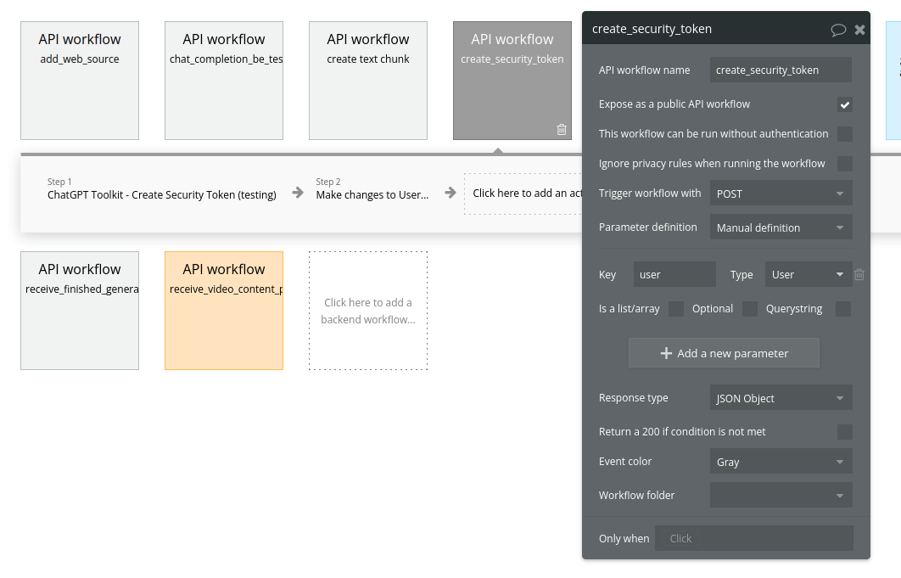
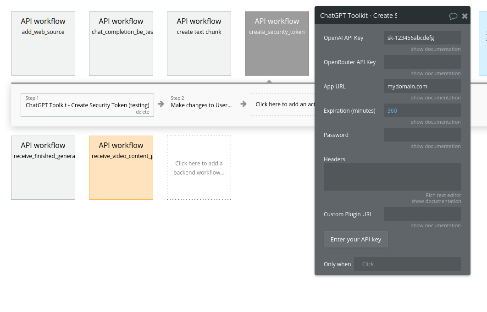
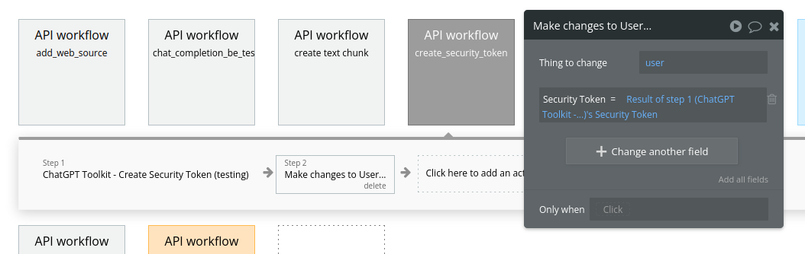
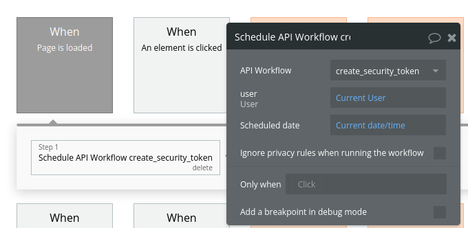

Usage
This page will cover various usage patterns for the plugin.
Authentication
Scenario 1 - You Provide API Key
If using OpenAI or OpenRouter in your app, you'll need to provide an API key to access their APIs. If you, as the app/platform owner, are using your own API keys to access the services, you will want to protect your keys, so that users cannot see them.
The "Create Security Token" action allows you encrypt your API keys, so that users cannot see them. This action returns a "Security Token", with the API key(s) encrypted within them. You can then pass the Security Token in actions like "Create Chat Completion", rather than passing your API key directly.
When using the Security Token pattern, you do not want to include anything in the "User OpenAI API Key" fields of actions.
Scenario 2 - User Provides API Key
In some cases, your user will provide their own API key (e.g., .for OpenAI). In these cases, you do not create or provide a Security Token, but pass the user's API key in the field "User OpenAI API Key".
Best practice - Backend Workflows
The most secure way to create a security token is to use the "Create Security Token" action in a backend workflow. In this way, your user cannot see the Security Token being created.
We recommend creating a security token on page load, by using the "When page is loaded" trigger, and storing the token on the user. The steps to do this are:
 Step 1. Create a Backend Workflow (BE WF). This workflow should take a parameter of type "User"; you will pass in the "Current User" to this param.
{kind=link}
 Step 2. In the BE WF, add a "Create Security Token" action. Fill in your API key and other details.
{kind=link}
 Step 3 - Add workflow step to "Make Changes to a Thing", and change "user".
{kind=link}
 Step 4 - Create workflow on page load, to call BE WF from step 1
{kind=link}
Best practice - Short-lived tokens
You can set an expiration time when creating your API keys. We recommend setting them to a short window. Short-lived keys reduce the amount of damage an attacker can do in a scenario where they figure out how to extract the security token.
The default expiration is 360 minutes, or 6 hours, but you could set it lower if your app permits. If your users' sessions are normally an hour or less, we'd recommend setting the Expiration parameter to 60 minutes.
Single-message UI
The simplest setup is a single-messsage display. In this format, the user can enter a prompt and see a single message in response. The user can interact with the AI multiple times, but they will only ever see the most recent message.
To set this up:
- Set up your Authentication workflows (see above)
- Add a Data Container to the page
- Add a text element, and set it's data source to be "Data Container A's Current Message"
- Add an input box to the page, for the user to enter a prompt.
- Add a button to trigger a workflow.
- Create a workflow to call "Chat Completion (streaming)"
- Set the "prompt" value to be "Input A's value".
- Pass in either a security token (see above) or the User's API key.
Multi-turn (conversational UI)
A slightly more advanced setup can display a multi-turn conversation between the user and the AI. This sort of UI is similar to what ChatGPT and Claude use (see screenshots below).
To set this up, follow these steps:
- Set up your Authentication workflows (see above)
- Add a Data Container to the page
- Add a Repeating Group to the page.
- Set it's data source to be "Data Container A's Display Messages".
- Add a text element in the first cell of the RG. Set it's data source to be "Current Cell's text".
- Add an input box to the page, for the user to enter a prompt.
- Add a button to trigger a workflow.
- Create a workflow to call "Chat Completion (streaming)"
- Pass in either a security token (see above) or the User's API key.